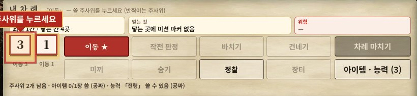
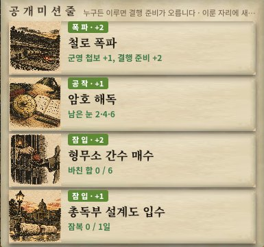
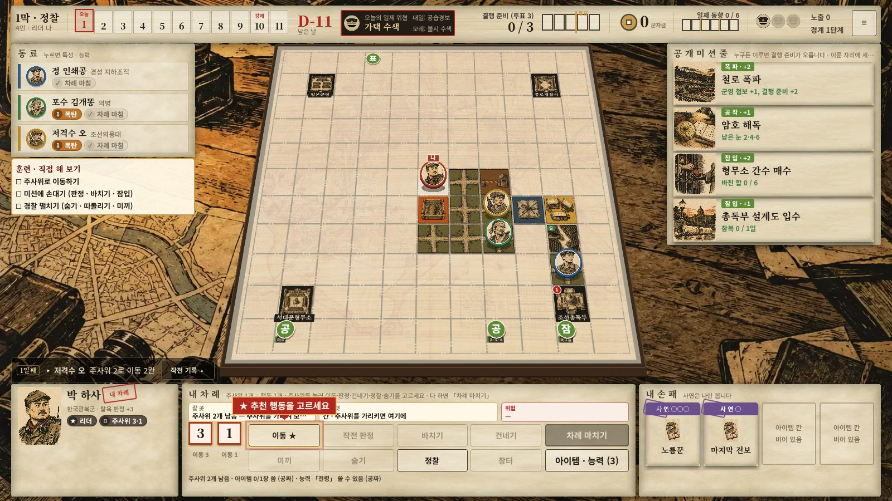

설계 사례
여섯 번의 결정
사례마다 같은 틀로 적었다. 문제 → 근거 → 레퍼런스 → 대안 → 결정 → 결과. 순서는 핵심 재미(1 · 2) → 덜어 내기(3) → 남의 눈(4) → 콘텐츠 폭(5) → 검증(6)이다.
사례 1 · 핵심 재미
팀 주사위 → 개인 작전 주사위
레퍼런스 9개 비교후보 4개
문제
- 아침에 팀 주사위(인원 + 2개)를 굴려 나눠 가졌다. 1인 + AI에서는 내가 먼저 고르고 AI가 남은 걸 가져갈 뿐이라 나누는 맛이 없었다.
- 남는 예비 주사위(1막 2개, 2막 5개)는 아낄 이유가 없어 공짜 보너스가 됐다.
- 예비 하나 × 쓰는 법 하나 = 단추 하나. 낮마다 단추가 쏟아졌다.
조건
하루에 진짜 고민 한두 번. AI 동료와 해도 성립할 것. 화면은 주 단추 하나 + 보조 몇 개.
레퍼런스
| 게임 | 본 것 · 판단 |
|---|
| Dead of Winter | 각자 행동 주사위. 「큰 눈을 어디에」가 매 라운드 고민 → 채택 |
| Burgle Bros | 차례마다 행동 4개, 이동에 운 없음. 주제는 가장 가깝지만 숫자를 처음부터 다시 맞춰야 함 |
| Robinson Crusoe | 둘이 몰아 붙이면 확정 성공 → 2막 장면 부품으로 보류 |
| Battlestar Galactica | 비공개로 보태기 → 변절용 부품, 변절을 빼며 버림 |
| Pandemic · Sky Team · Gloomhaven · Clank! · Marvel United | 비교만 |
대안
① 개인 주사위 (변화 작음) ② 행동 점수 (대담함) ③ 함께 붙기 (부품) ④ 비밀 보태기 (부품)
결정
① 개인 작전 주사위. 작전 판정은 고른 눈 + 새 주사위 1개 ≥ 목표. ②는 이동의 운이 사라져 「또 판데믹」이 될 수 있어 버렸다.
결과
- 목표 9 판정: 예전 2d6은 늘 28%. 이제 눈 6을 내면 67%, 눈 3이면 17%. 평균은 같고, 고르는 맛이 생겼다.
- 바꾼 직후 AI 4명 300판: 승률 46%(전 47~48%). 난이도는 그대로 두고 매일의 고민만 바꿨다.
- 예비 주사위 단추가 사라졌다. 대신 결행 대상별 승률이 32~63%로 벌어져 밸런스 단계로 넘겼다(사례 6).

지금 화면: 내 주사위 두 개(3 · 1)를 골라 행동 단추에 쓴다.
사례 2 · 반복
주사위 1개 = 행동 1개
문제
개인 주사위를 넣은 뒤에도 한 차례에 이동하고 아이템 · 능력 · 건네기 · 미끼 · 바치기까지 거의 다 할 수 있었다. 포기할 것이 없으니 고민도 없었다.
근거
직접 해 보니 차례마다 「다 하고 넘기기」가 됐다. 보통 보드게임처럼 여러 개 중 몇 개만 골라야 포기가 고민이 된다.
레퍼런스
Dead of Winter의 원래 방식(주사위 하나로 행동 하나)에 더 가깝게.
결정
- 차례에는 주사위를 하나씩 내어 행동한다. 1막은 하루 2개, 2막은 3개.
- 공짜는 아이템 1장 · 능력 하루 1번 · 차례 마치기뿐.
- 「숨기」(경찰이 따라오지 않음)를 새 행동으로. 주사위를 아끼는 날의 선택지.
결과
- 하루 행동이 2~3개로 줄었다. 「이동 두 번이냐, 이동 한 번 + 판정이냐」가 매 차례의 질문이 됐다.
- AI 4명 300판 승률 50.3% → 61.7%. 어려워질 줄 알았는데 오히려 쉬워졌다. 같은 묶음에서 같은 칸 허용(주사위 건네기)과 경찰 따돌림 거리도 바뀌어, 원인을 하나로 가르지 않고 기록만 해 두었다가 밸런스 단계에서 한꺼번에 맞췄다.
- 새 지표: AI가 굴린 주사위의 44.5%를 쓰지 않고 차례를 마침 → AI 개선 과제로 넘김.
배운 것 · 바꿀 때마다 재는 습관 덕분에, 예상과 반대인 결과를 바로 알아챘다.
사례 3 · 덜어 내기
변절을 넣었다가 뺀 결정
배경
숨은 배신자를 넣었었다. 투옥되면 심문 카드를 받고, 「흔들렸다」 2장이 모이면 돌아선다. Battlestar Galactica처럼 배신자가 있는 협력 게임을 참고했다.
문제
- 고르는 사람이 없다. 카드 2장이면 묻지 않고 돌아선다. 막을 틈도 안 보인다.
- 돌아선 변절자는 이동 · 기습 · 밀고뿐인 「걸어 다니는 경찰」. 자기 목표가 없다.
- 이를 위해 심문 카드 12장 · 설득 · 회유 위협 · 4인 전용 규칙 · 변절자 AI와 화면이 따로 있었다. 맛에 비해 무겁다.
근거
시뮬에서 변절은 판의 40~45%에서 나왔고, 변절 판은 승률이 10~12%p 낮았다. 숫자는 목표대로였지만 재미는 없었다.
대안
좋은 배신(숨는 단계 · 행동 메뉴 · 자기 목표)을 제대로 갖추기 → 미션 개편만큼 커진다.
결정
통째로 뺀다. 그 자리는 팀의 긴장(미션 · 일제 작전 · 노출 · 군자금)으로 채운다. 투옥의 아픔은 「아이템 1장 압수」로, 설득에 묶였던 능력 2개 · 회유 위협 5장 · 이벤트 · 사연은 하나씩 다른 것으로 바꿨다.
결과
4인 전용 규칙이 사라져 인원과 상관없이 같은 규칙이 됐다. 승률 46.3% → 50.3%. 대신 「긴장이 약하다」는 비평을 받았다 → 사례 4.
배운 것 · 수치가 목표 안이어도, 플레이어가 고르는 순간이 없으면 뺀다.
사례 4 · 남의 눈
비평을 받고 거른 과정
사람 플레이테스트 대신, 규칙서 전체를 다른 AI(GPT)에게 보여 주고 비평을 받았다. 지적은 다섯 가지였다.
| 지적 | 판단 | 결정 |
|---|
| 변절을 뺀 뒤 긴장이 약하다. 일제 작전이 판당 0.8번, 경찰은 주사위 하나로 떼어 냄, 날이 갈수록 세지는 장치 없음 | 받음 | 일제 동향 트랙(0~6): 일제 작전을 짝수 날마다 따로 뒤집는다. 못 막으면 동향이 오르고 벌칙이 커진다. 막아도 내려가지 않는다 |
| 결행 준비 3을 넘기면 더 모을 이유가 없다 | 받음 | 결행 혜택: 3을 넘는 1점마다 혜택 하나. 「지금 칠까, 더 쌓을까」 |
| 같은 칸 금지가 협력(건네기 · 면회)을 막는다 | 받음 | 요원끼리 같은 칸 허용. 막는 역할은 경찰만 |
| 2막 「버티기」 장면은 서서 기다리는 시간이다 | 받음 | 반격: 버티는 날 아침 판정 7을 막아야 하루를 센다 → 「큰 눈 하나 남겨 막아 내기」 |
| 온라인 4인이면 대기 시간과 한 사람의 지휘가 커진다 | 미룸 | 낮 동시 진행을 설계만 해 두었다. 목표가 「1인 + AI 웹판」이라 미뤘고, 온라인 방은 나중에 추가 모드로 따로 만들었다 |
| 규칙서 오류 · 모호 20건 | 받음 | 20건 모두 고침 |
거르는 기준: 맞는 말이어도 내 목표(1인 + AI 웹판, 30분 한 판) 밖이면 미룬다.
결과 · 일제 작전을 막은 비율 28% → 60%(목표 50~70%, AI를 고친 뒤 · 사례 6).
사례 5 · 콘텐츠 폭
미션을 타일에서 떼어 마커로
레퍼런스 6개출시 뒤 한 번 더
문제
- 「순사 부장 암살」이 경찰서와 상관없는, 맵 아무 데나 나온 암살 타일에서 이뤄졌다.
- 미션 타일은 116장 중 12장. 갈 곳이 운이었고, 빈 타일이 39%였다.
- 하는 일은 판정 아니면 들어가기, 보상은 거의 「첩보 +1」. 결국 「가까운 검은 칸에 가서 굴리기」.
레퍼런스
| 게임 | 가져온 것 |
|---|
| Black Orchestra | 준비를 쌓아 움직이는 표적을 잡기 → 암살 표적이 매일 움직이고, 정보원에 들르면 멈춤 |
| Horrified | 미션 하나 안에 준비 → 실행 두 단계 |
| Shadows over Camelot | 종류마다 작은 규칙이 다름 · 위협이 미션을 깎음 |
| Thunderbirds | 카드마다 보너스 조건 · 눈에 보이는 기한 |
| Burgle Bros | 「합 N」 대신 눈 조합(1 · 3 · 5) → 작은 눈도 쓸모 |
| Flash Point | 무거운 물건은 느리게 |
결정
미션이 공개되면 카드에 적힌 지역에 마커를 놓는다. 종류는 여섯 + 협동: 암살 · 잠입 · 폭파 · 공작(눈 바치기) · 연락(들고 나르기) · 잠복(쫓기지 않고 버티기).
출시 뒤
거점 안에 들어가는 미션 5장은 들어가자마자 경찰이 붙어 투옥되기 쉬웠고, 2막의 무대(거점 안)와 1막이 섞였다. → 「거점 옆 칸」 미션으로 바꿨다. 카드 id · 보상은 그대로 두어 저장 · 사연 · 특성이 이어지게 했다.
결과
미션 종류별 성공률(AI): 암살 67% · 연락 55% · 폭파 44% · 잠복 40% · 잠입 34% · 공작 25% · 협동 21%. 종류마다 난이도가 갈려 「오늘 무엇을 잡을까」가 생겼다.

공개 미션 줄. 카드마다 할 일과 남은 조건(눈 2 · 4 · 6, 합 0/6)이 보인다.

보드 위 마커(공 · 잠 · 표). 미션마다 갈 곳이 정해진다.
사례 6 · 검증
밸런스: 수치보다 원인
목표 · AI 4명 승률 45~55%, 결행 대상별 차이 15%p 안, 요원별 차이 ±10%p 안. AI는 사람보다 약하므로 AI 승률은 아래쪽 기준으로 본다.
- 기준선 승률 74.2%. 지는 판은 거의 2막에서만 났다.
- 반격 목표 · 군자금은 승률을 거의 못 움직였다. 장면 눈금이 가장 크게 움직였다.
- 모든 장면을 똑같이 +2 하면 거점 격차가 벌어졌다(형무소 10% · 총독부 64%) → 거점마다 폭을 따로 잡았다.
- 일제 작전 막은 비율 28%. 기한을 늘려도 그대로 → 시간이 아니라 AI가 마커를 안 쫓는 문제. 수치로 메우지 않고 AI를 고쳤다.
- 거의 못 이루던 사연(「자금책」 0%)은 조건을 공작 미션과 묶어 32%로.
- 출시 뒤 다시 벌어진 격차: 콘텐츠를 손본 뒤 격차가 18.2%p로. 마지막 장면은 눈금 1에 20%p 넘게 흔들려서, 마지막 장면은 한 칸만, 나머지는 같은 거점의 다른 장면으로 되돌리며 9가지 조합을 비교했다.
| 지표 | 목표 | 처음 | 밸런스 직후 | 출시 뒤 | 지금 |
|---|
| 승률 | 45~55% | 74.2% | 49.3% | 54.4% | 53.3% |
| 결행 대상별 차이 | 15%p 안 | 18.8%p | 14.8%p | 18.2%p | 6.0%p |
| 일제 작전 막음 | 50~70% | 27.9% | 60.0% | 60.1% | 60.1% |
| 요원별 차이 | ±10%p | – | −3.5 ~ +7.2 | −5.3 ~ +5.9 | −6.0 ~ +4.4 |
「지금」은 다른 시드(910000)로도 확인: 승률 53.2%, 격차 14.9%p. 그래프는 밸런스 보고.
배운 것 · 콘텐츠를 고치면 밸런스는 다시 깨진다. 고칠 때마다 같은 시드로 다시 재고, 다른 시드로 한 번 더 확인한다.